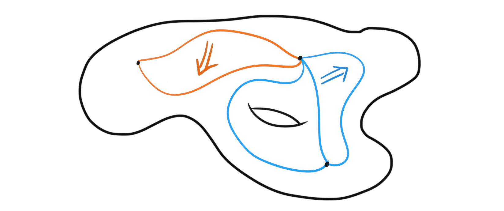

A litmus test is a question asked in politics to a potential candidate for high office in which the answer determines if the person gets nominated or not. If a person or a committee holds the power of nominating candidates, they can use that power to make sure that a potential candidate holds their view on a certain matter. So, what does this have to do with mathematics, or especially with homotopy theory? There is a question worth asking certain objects to check if they should be allowed to be a suitable “definition” for a certain nice structure. The question, or test, which we will look more closely at soon, first started as a conjecture by Grothendieck, named later “the homotopy hypothesis”. This conjecture is still open in the way formulated by Grothendieck, but it can be turned on its head to form this test instead. The reason this is possible is because of ambiguity in a certain definition in higher category theory, and because there is seemingly many inequivalent “definitions” for the same object. Before exploring any theory at all, the conjecture states that $\infty$-groupoids are equivalent to topological spaces. The litmus test then becomes; $X$ is considered a definition of $\infty$-groupoids if and only if all $X$s’ are equivalent to topological spaces.
Motivation
Before jumping into definitions and theory, I wanted to first give a little motivation to why we are going past normal categories, and why stuff with the $\infty$ prefix are interesting to study. As I understand it, the main reason to do $\infty$ -stuff is to make “less strict” versions of our familiar objects from normal abstract algebra, and it turns out that the correct definition of “less strict” kind of means “up to homotopy”. This will hopefully become apparent throughout this post. The main $\infty$ -object in this post will be $\infty$ -groupoids, and it acts as one of the fundamental higher objects in homotopy theory, and it is of course the star of the beforementioned litmus test.
The motivating example for studying so-called higher categories is the category of categories, denoted $Cat$. Or, to avoid nasty set theoretic Russel paradox business, we actually define it as the category of small categories. Here the objects are (small) categories, and the morphisms are functors. As we have learned in regular category theory, there also exists morphisms between functors, called natural transformations. Hence we have more types of things in this new type of category. We have two types of morphisms, which we simply call $1$-morphisms, which are the functors in this case, and $2$-morphisms, which are the natural transformations. Since $2$ is the highest we have in this setting, we call it a $2$-category. From normal category theory we also know that the collection of functors between two categories form a category themselves, so we can also think about a $2$-category as a category where all the homsets are themselves categories. When we discussed cosmoi, we defined what we called an enriched category, and this is exactly what a $2$-category is, a category enriched over $Cat$. We can do this because $Cat$ is monoidal under the Cartesian product. This definition actually makes what we define as strict $2$-categories. These are categories where composition of $1$-morphisms has to be associative on the nose, because they are the morphisms of a category, i.e. strictly associative. This also means that strict $2$-categories actually also are normal categories with more information. We can then iteratively define a strict $n$-category to be a category enriched in a strict $(n-1)$-category. These strict versions are easy to define, and are nice to work with, but turns out to rarely show up in nature. As we mentioned, we want to have less strict versions of algebraic objects, not keep going with the same stuff.
Weak higher categories
The question then becomes; how do we define a non-strict, or more often called a weak $2$-category? This is not obvious, and require us to choose how to do it. Intuitively we want a $2$-category to be a collection of objects together with $1$-morphisms and $2$-morphisms, such that compositions of $1$-morphisms are associative up to invertible $2$-morphisms, but formalizing this in an exact definition is not trivial. One solution is called bicategories. These are created by weakening the notion of enrichment, and calling a bicategory a category weakly enriched in $Cat$. This is the oldest, and most used definition of a weak $2$-category.
Definition (Bicategory): A bicategory is a structure consisting of
- a collection of objects, often called $0$-cells
- for each pair of $0$-cells $x, y$, a category $B(x, y)$, whose objects are called $1$-cells and whose morphisms are called $2$-cells
- for each $0$-cell $x$ there is a distinguished $1$-cell $1_x \in B(x,x)$ called the identity $1$-cell at $x$
- for each triple of $0$-cells $x,y,z$ a functor $C_{x, y, z}: B(x, y)\times B(y, z)\longrightarrow B(x, z)$ which sends a pair of $1$-cells $(g, f) \longmapsto g\circ f$, called horizontal composition, and pairs of $2$-cells $(\epsilon, \eta )\longmapsto \epsilon \ast \eta$, called vertical composition
- for each pair of $0$-cells $x, y$ natural isomorphisms $l: f\circ 1_x \longrightarrow f$ and $r: 1_y \circ f \longrightarrow f$ called the left and right unitor respectively
- for each quadruple of $0$-cells $w, x, y, z$ a natural isomorphism $\alpha: B(y, z)\times B(x, y)\times B(w, x) \longrightarrow B(w, z)$ built from the functor $\circ$, called the associator
such that the unitors satisfy the triangle identity
and the associators satisfy the pentagon identity
This definition is a mouthful, but it shows how intricate the definitions of these higher objects can become. And remember, this is only a weak $2$-category. Imagine how many relations there are for even higher structures. The good thing is that we don’t have to imagine. We simply have to find another way of representing these objects with more familiar terms. We have to model them by something else. So for example for an $(\infty, 1)$-category, there are already objects that behave in the way we want, and we just have to use the already well defined structure. We wont go through these in detail in this post, as I am saving them for a bit later. But, to mention one and the most used model for an $(\infty, 1)$-category, which is an $\infty$-category where all $k$-morphisms are weakly invertible for $k\geq 2$, is called quasi-categories. These are special types of simplicial sets, and can be defined with little trouble. The theory of higher categories mainly consists of theory for $(\infty, 1)$-categories, and mainly through the model of quasi-categories. We can define an $(\infty, n)$-category sort of to be a category weakly enriched in $(\infty, n-1)$-categories, which means that to understand $(\infty, 1)$-categories, we need to understand $(\infty, 0)$-categories, which are the $\infty$-groupoids.
$\infty$-groupoids
To describe the litmus test, we luckily only need one of the simpler $\infty$-categories. For normal categories, one of the simplest types is the ones where all morphisms are invertible, i.e. groupoids. If we carry this logic over to our new setting, an $\infty$-groupoid should be an $\infty$-category where all of the $k$-morphisms are invertible up to an invertible $(k+1)$-morphism, which makes sense since we said they were the $(\infty, 0)$-categories.
As we have seen, having all these higher morphisms comes with a lot of troubles, the most prominent one being how we are supposed to make a proper definition when we are required to make infinite choices for composition laws. So here we want to model $\infty$-groupoids using other more familiar objects. We started by saying that “less strict” roughly means “up to homotopy” which hinted at the fact that we can use topological spaces and their homotopy theory to help us on the way.
If we take a topological space $X$, it has a category associated to it, namely the fundamental groupoid $\Pi_1 X$. This is a category where the objects are all the points in $X$ and the morphisms are homotopy classes of paths between points. If we instead of homotopy classes use just paths as morphisms, the composition, i.e. concatenation of paths, becomes invertible up to homotopy. And this homotopy is invertible up to homotopy, and so we can continue ad infinitum. This category is called the fundamental $\infty$-groupoid of $X$. So, if we define $1$-morphisms to be paths, $2$-morphisms to be homotopies of paths, $3$-morphisms to be homotopies of homotopies of paths etc, we get that topological spaces satisfy the intuitive definition we had of an $\infty$-groupoid.
This is where the litmus test finally comes into play. This description of $\infty$-groupoids as topological spaces is very nice, but there could be other models that serve other purposes. The litmus test then tells us that any suitable definition of $\infty$-groupoids, i.e. any chosen model, should produce a category $\infty grpd$, which is equivalent to $Top$, the category of topological spaces, i.e. $\infty grpd \simeq Top$. Any notion of $\infty$-groupoids can then be interpreted as just drawing diagrams between dots by using paths and homotopies on a topological space, and the geometry of the topological space determines which paths can have homotopies between them etc.

This also tells us that any definition, or model of $\infty$-groupoids will produce our familiar homotopy theory, which gives us many different views on the already familiar classical theory.
There are already many such models, and they are used for different things. One of the more used ones are Kan complexes, which are simplicial sets where every horn has a filler. There are also globular sets, marked simplicial sets, algebraic Kan complexes, etc. We will maybe see some of these later when we discuss $(\infty, 1)$-categories. But, for now this is what I wanted to say about the homotopy hypothesis.